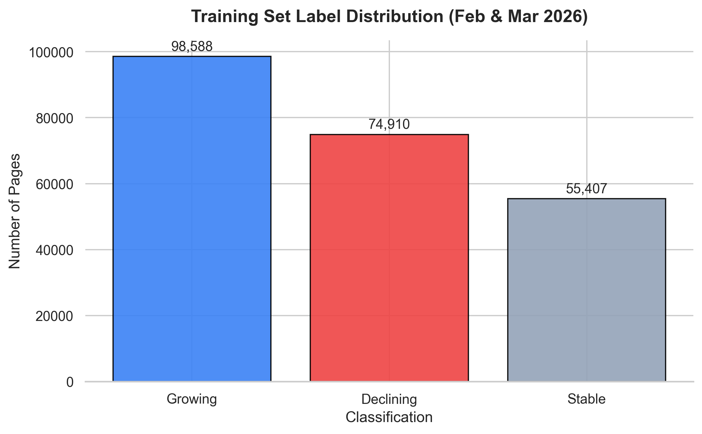
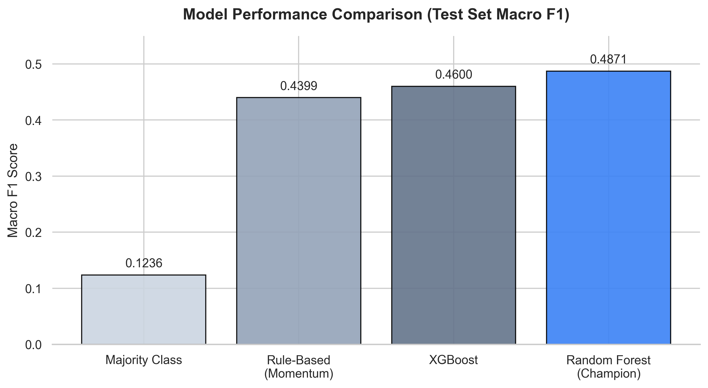
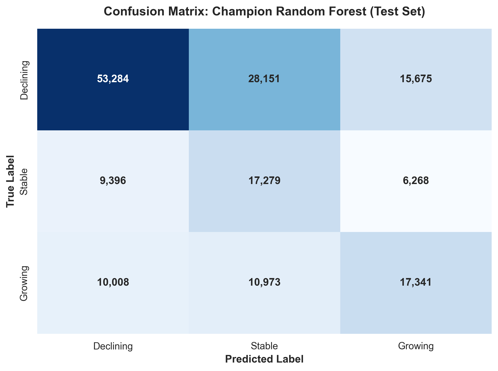
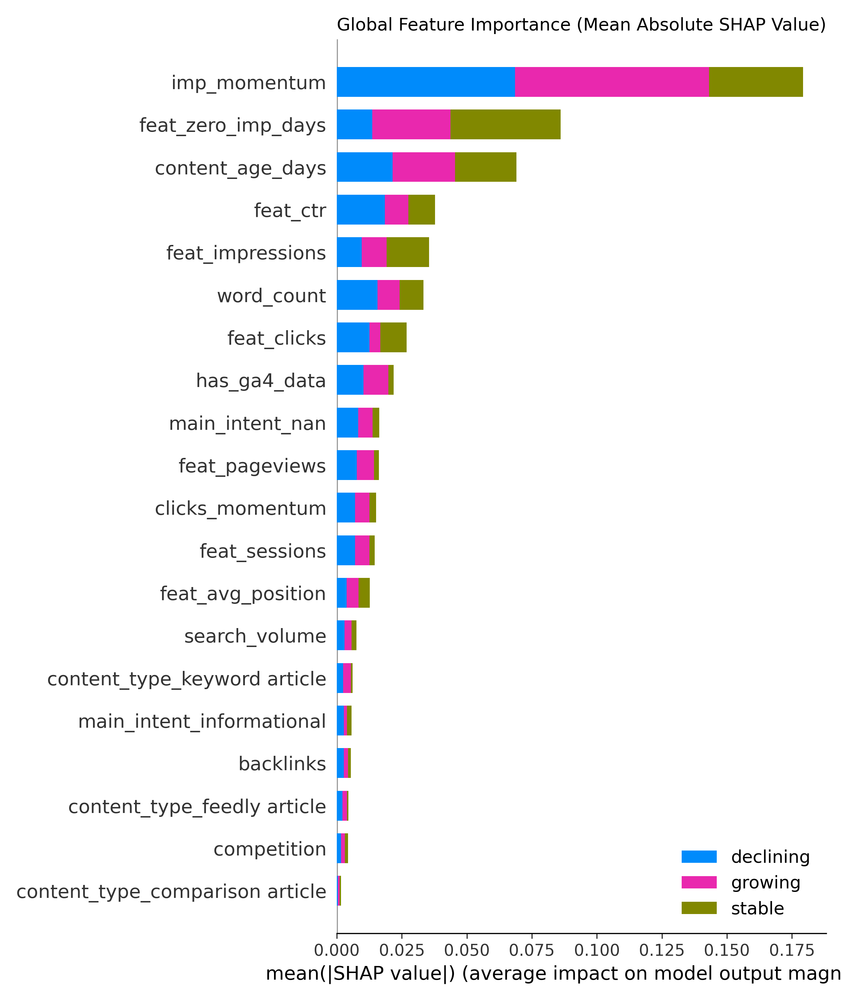
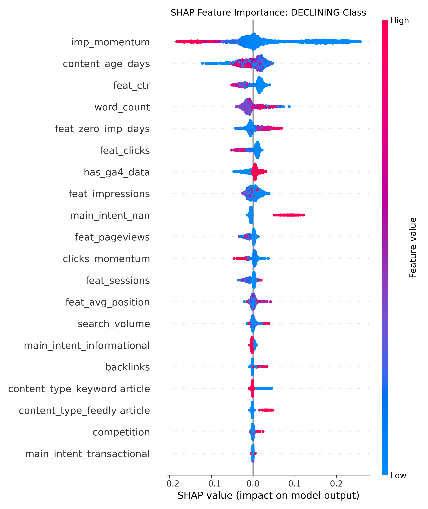

Predictive Modeling of Search Engine Visibility Decay: A Machine Learning Approach for Proactive SEO
1. Abstract
Search Engine Optimization (SEO) traditionally relies on reactive analytics—diagnosing traffic loss after it has already occurred. This paper introduces a proactive machine learning methodology to forecast short-term search visibility changes (Growth, Stability, or Decline) for individual web pages before they manifest. Utilizing the FlyRank Internship Warehouse dataset, we engineered a deterministic, leakage-free pipeline with a rolling 30-day feature window predicting a subsequent 30-day horizon. Evaluated on a strictly out-of-time test set, our Champion Random Forest classifier achieved a Macro F1 score of 0.4871, successfully outperforming a rule-based momentum heuristic (0.4399). SHAP analysis indicates that the model primarily relies on recent momentum, historical volume, and content age when generating predictions. The pipeline culminates in a recommendation engine that assigns automated, prioritized interventions (e.g., Refresh, Prune, Investigate) to mitigate projected decay.
2. Introduction
In digital marketing, organic search traffic varies over time because of numerous observed and unobserved factors. Most enterprise SEO practices rely on manual heuristics and lagging indicators to identify decaying content. This research proposes a predictive scoring system that identifies which URLs are most likely to lose visibility over the next 30 days, enabling content teams to intervene proactively.
3. Problem Statement
The primary objective is to classify a web page's future 30-day traffic trajectory into three mutually exclusive categories: Growing, Stable, or Declining. The system must operate without looking ahead (preventing temporal leakage), must outperform standard manual heuristics, and must translate raw predictions into actionable SEO interventions.
4. Dataset
We utilized the public FlyRank/internship-warehouse dataset, which contains high-resolution daily performance records (Google Search Console, Google Analytics 4) and static content dimensions for thousands of URLs structured in a five-table star schema.
- Data Scale: The raw dataset contains 78.8 million fact rows and a total of ~93.4 million warehouse rows.
- Qualified Instances: After rigorously applying an activity filter (requiring $\ge 10$ impressions in the feature window) and ensuring valid join integrity, we extracted a clean modeling dataset of 548,528 valid instances.
5. Methodology
To prevent look-ahead bias, we established strict, rolling observation windows:
- Feature Window ($T_{feat}$): 30 days of historical data used to engineer predictive features.
- Prediction Window ($T_{pred}$): The subsequent 30 days used exclusively to compute the target label. This structural isolation guarantees that no future information leaks into the training matrix.
6. Feature Engineering
We engineered a matrix of 17 leakage-free features per instance, categorized as follows:
- Traffic Aggregates: Total impressions, clicks, average position, and zero-impression days over $T_{feat}$.
- Derived Engagement: GA4 sessions, pageviews, and Click-Through Rate (CTR).
- Momentum Ratios: Growth velocity comparing the second half of the feature window against the first half (
imp_momentum,clicks_momentum). - Content Dimensions: Time-invariant properties (search volume, keyword intent, content type) and dynamically calculated
content_age_days.
Every feature was verified to use only information available inside the feature window.
7. Label Definition
The target variable is a multiclass label defined by the relative percentage change in impressions between the Prediction Window and the Feature Window:
- Growing: $\Delta\% > +20\%$
- Stable: $-20\% \le \Delta\% \le +20\%$
- Declining: $\Delta\% < -20\%$

The feature window required $\ge 10$ impressions to ensure the percentage change denominator is not near zero and that the observed traffic changes are statistically meaningful.
8. Validation Strategy
We implemented a strict out-of-time (OOT) validation strategy to simulate a real-world production environment and prevent temporal data leakage:
- Train:
train_1(Feb 2026 Cutoff) +train_2(Mar 2026 Cutoff) — 228,905 instances - Validation:
val(Apr 2026 Cutoff) — 151,248 instances - Test (OOT):
test(May 2026 Cutoff) — 168,375 instances
The primary evaluation metric selected was Macro F1-Score to account for significant class imbalance observed across the temporal splits.
9. Baseline
We established two naive baselines:
- Majority Class Predictor: Predicting the most frequent class in the training set ("growing"). Test Set Macro F1: 0.1236.
- Momentum Heuristic: A rule-based approach predicting that the traffic direction observed in the final 15 days of the feature window will continue into the prediction window. Test Set Macro F1: 0.4399.
10. Modeling Results
Two candidate models (RandomForest, XGBoost) were trained on the identical feature matrix and evaluated against the baselines on the May 2026 Test Set.
| Model | Macro F1-Score | Status |
|---|---|---|
| Majority Class Baseline | 0.1236 | Predicts "growing" |
| Rule-Based Baseline | 0.4399 | Momentum Heuristic |
| XGBoost | 0.4600 | Selected via early stopping on Validation |
| RandomForest (Champion) | 0.4871 | n_estimators=100, max_depth=10, class_weight='balanced' |
The Random Forest achieved the highest Macro F1 score among the evaluated models.


11. Explainability (SHAP)
To interpret the trained model's predictions, SHAP (SHapley Additive exPlanations) was applied to the Champion Random Forest model.
The SHAP analysis indicates that the trained model primarily relies on three core factors:
- Recent Momentum (
imp_momentum) - Historical Volume (
feat_impressions) - Content Age (
content_age_days)


These learned patterns are broadly consistent with common SEO intuition: older content generally contributed toward declining predictions, whereas newer content with explosive recent momentum contributed toward growing predictions.
12. Recommendation Engine
To translate probabilistic predictions into actionable business strategy, we deployed a deterministic Recommendation Engine over the May 2026 snapshot. The engine maps the predicted status and business context to specific SEO interventions using the following explicit logic:
| Predicted Status | Business Context | Action |
|---|---|---|
| Growing | Any | Protect |
| Stable | High Traffic (feat_impressions > 1000) |
Maintain |
| Stable | Low Traffic (feat_impressions $\le 1000$) |
Optimize |
| Declining | Old Content (content_age_days > 365) |
Refresh |
| Declining | Recent High-Value Content (feat_impressions $\ge 100$) |
Investigate (Review recent search performance trends and investigate potential causes of the observed decline.) |
| Declining | Low-Value Content (feat_impressions < 100) |
Prune / Consolidate |
13. Ranked Recommendations
By running the recommendation engine across the out-of-time test set, we generated a prioritized list of SEO interventions. Below is an example of the top 10 most critical pages requiring immediate intervention, sorted by their recent impression volume:
content_hash_id predicted_status prediction_probability feat_impressions action reason_code
content_62770e1299963fe4 declining 0.485402 180151.0 Investigate Review recent search performance trends and investigate potential causes of the observed decline.
content_661a7734f691bef5 declining 0.453426 169494.0 Investigate Review recent search performance trends and investigate potential causes of the observed decline.
content_99fc6465edb0e52c declining 0.614921 151230.0 Investigate Review recent search performance trends and investigate potential causes of the observed decline.
content_963de14b1f58978f declining 0.609215 142085.0 Refresh Declining traffic on older content; needs a content refresh.
content_14df7b049d1d6467 declining 0.442516 119743.0 Investigate Review recent search performance trends and investigate potential causes of the observed decline.
content_468d0aa0891d425d declining 0.455516 114071.0 Investigate Review recent search performance trends and investigate potential causes of the observed decline.
content_f33ad8a343180e8b declining 0.387023 107944.0 Investigate Review recent search performance trends and investigate potential causes of the observed decline.
content_b88025fbf2493889 declining 0.440025 103586.0 Investigate Review recent search performance trends and investigate potential causes of the observed decline.
content_6486239516a186d7 declining 0.478496 99857.0 Investigate Review recent search performance trends and investigate potential causes of the observed decline.
content_bdf60c86117079be declining 0.591222 95403.0 Investigate Review recent search performance trends and investigate potential causes of the observed decline.
14. Failure Analysis
An extensive error analysis on the test set (Overall Error Rate: 47.8%) revealed three primary failure profiles:
- The "False Growth" Trap: Transient traffic spikes in the feature window cause the model to over-predict sustained growth, failing to anticipate rapid regression to the mean.
- The "Stability" Illusion: The inherent daily volatility of short-term search performance fluctuations makes the $\pm 20\%$ stability band notoriously difficult to hit; the model tends to over-predict directional movement (Growth/Decline) instead.
- Macro-Level Distribution Shift: The model was trained on earlier temporal windows with a higher proportion of growing pages and evaluated on a later out-of-time window with substantially more declining pages.
15. Limitations
When evaluating this system for production, the following limitations must be explicitly acknowledged:
- Feature Sparsity: The model relies entirely on internal behavioral signals and static keyword dimensions. It lacks external off-page features (e.g., competitor backlink velocity), making it blind to sudden exogenous shocks.
- Short-Term Volatility: The 30-day feature window makes the model highly reactive to short-term noise.
- Imbalanced Shift Bias: The model appears to have learned patterns from earlier periods that did not fully generalize to the later evaluation window. Rolling retraining may help mitigate temporal drift in a production setting.
16. Reproducibility
All data cleaning, feature engineering, modeling, and evaluation scripts have been committed to a central repository. The preprocessing pipeline is deterministic through fixed temporal splits and fixed random seeds.
17. Acknowledgments
Built on the FlyRank ML Internship dataset provided by FlyRank. This work uses the FlyRank internship warehouse dataset for educational and research purposes. More information: https://flyrank.ai